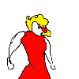

귀여운 만두콘
그렇다면 이 작가가 그린 다른 그림들은 어떨까?
귀여운 만두콘
그렇다면 이 작가가 그린 다른 그림들은 어떨까?
아
곧 군대가지 읺나
재능있네 ㅋㅋ
어우 뭐야ㅋㅋㅋㅋㅋ
메롱이 곧 군대 간다는 거 같더라
그 나이에 저 정도 재능이라니 크게 될 녀석이군
이미 지자체에서 커미션받는 프로임 ㅋㅋ
저거 작가 둘리 만화 그렸을때가 고딩아녔었나 ㅋㅋㅋ ㄹㅇ 충격이였음
디씨인들이 입을 모아 넌 크게될놈이니 절대 음지 정치드립에 발담그지 말라고 한 악마의 재능
메롱시티는 그 조언을 깊게 받아들였고
그 보답으로 고향 디씨에 콩코드 바즈만화를 선물했다
훌륭하고 기특한 친구네
박히벌레ㅗㅜㅑ
몇개는 처음보네
크아아아악
크아아아악

재능은 애매하지 않다는게 이런거였냐고!! 크아악
양심있게 리워드는 안 올려줬구나
동세라 그래야 하나. 애니메이션의 역동적인 느낌을 잘 쓰는 것 같음ㅋㅋㅋ
이 사람 둘리 만화 그림 처음 보고 진짜 천재라고 생각했음
사람이 무의식적으로 정해놓고 있는 형태가 파괴되는 정도라는 게 있는데
그 선을 확실히 넘었지만 동시에 형태가 무너질 정도로 파괴되진 않았음
그리고 그걸 움짤로 만들어서 그것마저 파괴함;;;
재능은 애매한 것이 아니다 라는 게 이 사람 보고 하는 말임 진짜
ㅋㅋㅋㅋㅋㅋㅋㅋㅋㅋㅋ
세상에

ㄹㅇ이거보고 감탄
배돌이아재~~~~~~~~~~~~~~~~~~~~
생방송중이 당시 내가 인터뷰식 던진 질문 :
Q : 어쩌다 콩코드에 바즈 사랑꾼이되었냐?
A : 아니...이게? 이세상에 존재하면안될것이 이세상에 존재하니까, 흠... 이건 안되겠군 반드시 그려야겠다 어쩌보니 그리게 된거다.
라고함.
크아아악 점